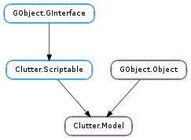

| Subclasses: | Clutter.ListModel |
|---|
| append(*args) | |
| appendv(columns, values) | |
| filter_iter(iter) | |
| filter_row(row) | |
| foreach(func, *user_data) | |
| get_column_name(column) | |
| get_column_type(column) | |
| get_filter_set() | |
| get_first_iter() | |
| get_iter_at_row(row) | |
| get_last_iter() | |
| get_n_columns() | |
| get_n_rows() | |
| get_sorting_column() | |
| insert(row, *args) | |
| insert_value(row, column, value) | |
| insertv(row, columns, values) | |
| prepend(*args) | |
| prependv(columns, values) | |
| remove(row) | |
| resort() | |
| set_filter(func, *user_data) | |
| set_names(names) | |
| set_sort(column, func, *user_data) | |
| set_sorting_column(column) | |
| set_types(types) |
| Name | Type | Flags | Description |
|---|---|---|---|
| filter-set | bool | r | Whether the model has a filter |
| Name | Parameters | Return | Description |
|---|---|---|---|
| filter-changed | The ::filter-changed signal is emitted when a new filter has been applied | ||
| row-added | Clutter.ModelIter | The ::row-added signal is emitted when a new row has been added. The data on the row has already been set when the ::row-added signal has been emitted. | |
| row-changed | Clutter.ModelIter | The ::row-removed signal is emitted when a row has been changed. The data on the row has already been updated when the ::row-changed signal has been emitted. | |
| row-removed | Clutter.ModelIter | The ::row-removed signal is emitted when a row has been removed. The data on the row pointed by the passed iterator is still valid when the ::row-removed signal has been emitted. | |
| sort-changed | The ::sort-changed signal is emitted after the model has been sorted |
| Name | Type | Access |
|---|---|---|
| parent_instance | GObject.Object | r |
Bases: GObject.Object, Clutter.Scriptable
Base class for list models. The Clutter.Model structure contains only private data and should be manipulated using the provided API.
Creates and appends a new row to the Clutter.Model, setting the row values upon creation. For example, to append a new row where column 0 is type GObject.TYPE_INT and column 1 is of type GObject.TYPE_STRING:
ClutterModel *model;
model = clutter_model_default_new (2,
G_TYPE_INT, "Score",
G_TYPE_STRING, "Team");
clutter_model_append (model, 0, 42, 1, "Team #1", -1);
| Parameters: |
|
|---|
Creates and appends a new row to the Clutter.Model, setting the row values for the given columns upon creation.
| Parameters: | iter (Clutter.ModelIter) – the row to filter |
|---|---|
| Returns: | True if the row should be displayed, False otherwise |
| Return type: | bool |
Checks whether the row pointer by iter should be filtered or not using the filtering function set on model.
This function should be used only by subclasses of Clutter.Model.
| Parameters: | row (int) – the row to filter |
|---|---|
| Returns: | True if the row should be displayed, False otherwise |
| Return type: | bool |
Checks whether row should be filtered or not using the filtering function set on model.
This function should be used only by subclasses of Clutter.Model.
| Parameters: |
|
|---|
Calls func for each row in the model.
| Parameters: | column (int) – the column number |
|---|---|
| Returns: | the name of the column. The model holds the returned string, and it should not be modified or freed |
| Return type: | str |
Retrieves the name of the column
| Parameters: | column (int) – the column number |
|---|---|
| Returns: | the type of the column. |
| Return type: | GObject.GType |
Retrieves the type of the column.
| Returns: | True if a filter is set |
|---|---|
| Return type: | bool |
Returns whether the model has a filter in place, set using Clutter.Model.set_filter ()
| Returns: | A new Clutter.ModelIter. Call GObject.Object.unref () when done using it |
|---|---|
| Return type: | Clutter.ModelIter |
Retrieves a Clutter.ModelIter representing the first non-filtered row in model.
| Parameters: | row (int) – position of the row to retrieve |
|---|---|
| Returns: | A new Clutter.ModelIter, or None if row was out of bounds. When done using the iterator object, call GObject.Object.unref () to deallocate its resources |
| Return type: | Clutter.ModelIter |
Retrieves a Clutter.ModelIter representing the row at the given index.
If a filter function has been set using Clutter.Model.set_filter () then the model implementation will return the first non filtered row.
| Returns: | A new Clutter.ModelIter. Call GObject.Object.unref () when done using it |
|---|---|
| Return type: | Clutter.ModelIter |
Retrieves a Clutter.ModelIter representing the last non-filtered row in model.
| Returns: | the number of columns |
|---|---|
| Return type: | int |
Retrieves the number of columns inside model.
| Returns: | The length of the model. If there is a filter set, then the length of the filtered model is returned. |
|---|---|
| Return type: | int |
Retrieves the number of rows inside model, eventually taking into account any filtering function set using Clutter.Model.set_filter ().
| Returns: | a column number, or -1 if the model is not sorted |
|---|---|
| Return type: | int |
Retrieves the number of column used for sorting the model.
Inserts a new row to the Clutter.Model at row, setting the row values upon creation. For example, to insert a new row at index 100, where column 0 is type GObject.TYPE_INT and column 1 is of type GObject.TYPE_STRING:
ClutterModel *model;
model = clutter_model_default_new (2,
G_TYPE_INT, "Score",
G_TYPE_STRING, "Team");
clutter_model_insert (model, 3, 0, 42, 1, "Team #1", -1);
| Parameters: |
|
|---|
Sets the data in the cell specified by iter and column. The type of value must be convertable to the type of the column. If the row does not exist then it is created.
| Parameters: |
|
|---|
Inserts data at row into the Clutter.Model, setting the row values for the given columns upon creation.
Creates and prepends a new row to the Clutter.Model, setting the row values upon creation. For example, to prepend a new row where column 0 is type GObject.TYPE_INT and column 1 is of type GObject.TYPE_STRING:
ClutterModel *model;
model = clutter_model_default_new (2,
G_TYPE_INT, "Score",
G_TYPE_STRING, "Team");
clutter_model_prepend (model, 0, 42, 1, "Team #1", -1);
| Parameters: |
|
|---|
Creates and prepends a new row to the Clutter.Model, setting the row values for the given columns upon creation.
| Parameters: | row (int) – position of row to remove |
|---|
Removes the row at the given position from the model.
Force a resort on the model. This function should only be used by subclasses of Clutter.Model.
| Parameters: |
|
|---|
Filters the model using the given filtering function.
| Parameters: | names ([str]) – an array of strings |
|---|
Assigns a name to the columns of a Clutter.Model.
This function is meant primarily for GObject.Objects that inherit from Clutter.Model, and should only be used when contructing a Clutter.Model. It will not work after the initial creation of the Clutter.Model.
| Parameters: |
|
|---|
Sorts model using the given sorting function.
| Parameters: | column (int) – the column of the model to sort, or -1 |
|---|
Sets the model to sort by column. If column is a negative value the sorting column will be unset.
| Parameters: | types ([GObject.GType]) – an array of GObject.Type types |
|---|
Sets the types of the columns inside a Clutter.Model.
This function is meant primarily for GObject.Objects that inherit from Clutter.Model, and should only be used when contructing a Clutter.Model. It will not work after the initial creation of the Clutter.Model.